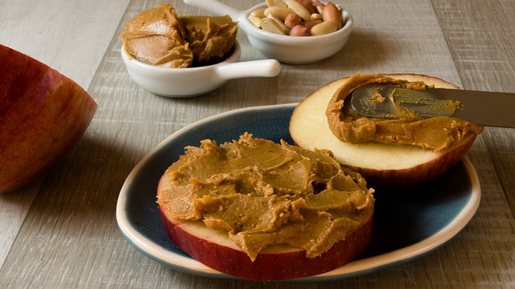

This is a delicious dessert spread great for parties, office functions, or holiday gatherings! We recommend serving the spread on tart apple rounds for a tasty sour/sweet balance, but this spread is also wonderful on toast, bagels, and english muffins. Enjoy!
Serves: Four (or two very hungry people)
Ingredients
- 1.5 Cups of Creamy or Chunky Peanut Butter
- 1 Cup of Cream Cheese (or 1 Standard 8 oz. Packaged Block)
- 2 Tablespoons of Whole Milk
- 2 Tablespoons of Maple Syrup
- 1 Teaspoon of Salt
- 1 Teaspoon of Vanilla Extract
Method
- Combine all ingredients in a large bowl.
- Using a stand mixer, hand mixer, or very strong forearms, whip the mixture until light and fluffy.
- Chill in refrigerator for 2-3 hours.
- Spread on apples, bananas, celery, or your favorite baked good!